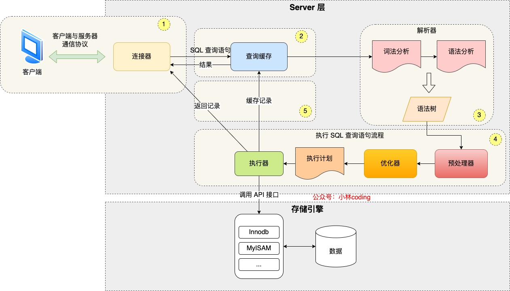
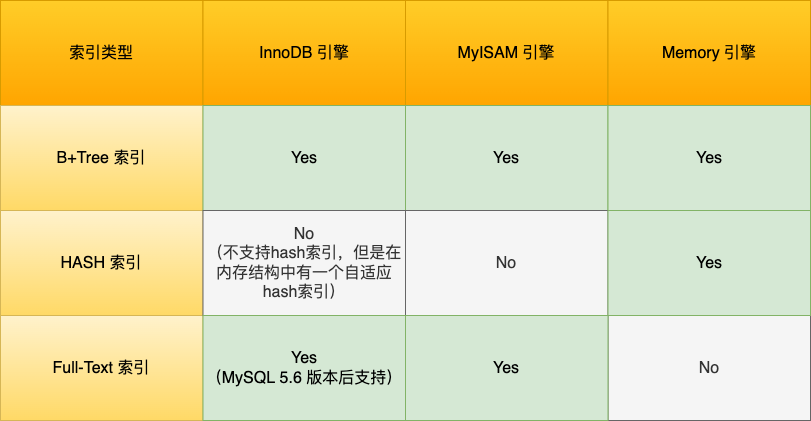
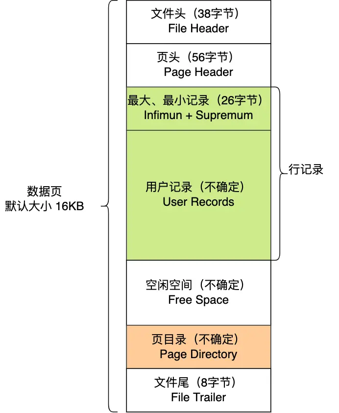

一条SQL语句的执行流程¶

MySQL 的架构共分为两层：Server 层和存储引擎层，
- Server 层负责建立连接、分析和执行 SQL。MySQL 大多数的核心功能模块都在这实现，主要包括连接器，查询缓存、解析器、预处理器、优化器、执行器等。
- 存储引擎层负责数据的存储和提取。支持 InnoDB、MyISAM、Memory 等多个存储引擎，不同的存储引擎共用一个 Server 层。
流程
- 连接器：建立连接，管理连接、校验用户身份；
- 查询缓存：查询语句如果命中查询缓存则直接返回，否则继续往下执行。MySQL 8.0 已删除该模块；
- 解析 SQL，通过解析器对 SQL 查询语句进行词法分析、语法分析，然后构建语法树，方便后续模块读取表名、字段、语句类型；
- 执行 SQL：执行 SQL 共有三个阶段：
- 预处理阶段：检查表或字段是否存在；将
select *中的*符号扩展为表上的所有列。 - 优化阶段：基于查询成本的考虑， 选择查询成本最小的执行计划；
- 执行阶段：根据执行计划执行 SQL 查询语句，从存储引擎读取记录，返回给客户端；
索引¶
定义¶
索引：帮助存储引擎快速获取数据的一种数据结构，形象的说就是索引是数据的目录。
MySQL的索引是在存储引擎层实现的
是否需要索引¶
需要创建索引：
- 字段有唯一性限制的
- 经常用于
WHERE查询条件的字段，这样能够提高整个表的查询速度，如果查询条件不是一个字段，可以建立联合索引。 - 经常用于
GROUP BY和ORDER BY的字段，这样在查询的时候就不需要再去做一次排序了，因为我们都已经知道了建立索引之后在 B+Tree 中的记录都是排序好的。
不需要创建索引：
WHERE条件，GROUP BY，ORDER BY里用不到的字段- 字段中存在大量重复数据
- 表数据太少的时候，不需要创建索引；
- 经常更新的字段不用创建索引
分类¶
数据结构¶
从数据结构的角度来看，MySQL 常见索引有 B+Tree 索引、Hash 索引、Full-Text 索引（全文索引）

在创建表时，InnoDB 存储引擎会根据不同的场景选择不同的列作为索引：
- 如果有主键，默认会使用主键作为聚簇索引的索引键（key）；
- 如果没有主键，就选择第一个不包含 NULL 值的唯一列作为聚簇索引的索引键（key）；
- 在上面两个都没有的情况下，InnoDB 将自动生成一个隐式自增 id 列作为聚簇索引的索引键（key）；
物理存储¶
从物理存储的角度来看，索引分为聚簇索引（主键索引）、二级索引（辅助索引）
- 主键索引的 B+Tree 的叶子节点存放的是实际数据，所有完整的用户记录都存放在主键索引的 B+Tree 的叶子节点里；
- 二级索引的 B+Tree 的叶子节点存放的是主键值，而不是实际数据。
覆盖索引：在查询时使用了二级索引，如果查询的数据能在二级索引里查询的到，那么就不需要回表，这个过程就是覆盖索引。
回表：如果查询的数据不在二级索引里，依据二级索引得到的主键值，再检索主键索引，就能查询到数据了，这个过程就是回表。
字段特性¶
- 主键索引：建立在主键字段上的索引，通常在创建表的时候一起创建，一张表最多只有一个主键索引，索引列的值不允许有空值。
- 唯一索引：建立在 UNIQUE 字段上的索引，一张表可以有多个唯一索引，索引列的值必须唯一，但是允许有空值。
- 普通索引：建立在普通字段上的索引，既不要求字段为主键，也不要求字段为 UNIQUE。
- 前缀索引：指对字符类型字段的前几个字符建立的索引，而不是在整个字段上建立的索引。目的是减少索引占用的存储空间，提升查询效率。
字段个数¶
- 单列索引：建立在单列上的索引称为单列索引，比如主键索引
- 联合索引（复合索引）：建立在多列上的索引称为联合索引
联合索引的注意事项：
- 最左匹配原则
- 遇到 >、< 的范围查询会停止匹配：范围查询的字段可以用到联合索引，但是在范围查询字段的后面的字段无法用到联合索引
- 对于 >=、<=、BETWEEN、like 前缀匹配的范围查询，并不会停止匹配
- 索引下推：对于范围查询停止匹配的情况：
- 在 MySQL 5.6 之前，只能从 ID（主键值）开始一个个回表，到「主键索引」上找出数据行，再对比后面的字段是否符合。
- MySQL 5.6 引入的索引下推优化（index condition pushdown)， 可以在联合索引遍历过程中，对联合索引中包含的字段先做判断，直接过滤掉不满足条件的记录，减少回表次数。
索引优化¶
- 前缀索引优化
使用某个字段中字符串的前几个字符建立索引
优点：减小索引字段大小，可以增加一个索引页中存储的索引值，有效提高索引的查询速度。
局限性：
-
order by 无法使用前缀索引
-
无法把前缀索引用作覆盖索引
-
覆盖索引优化（避免回表）
-
主键索引最好是自增的
-
自增主键：每次插入的新数据就会按顺序添加到当前索引节点的位置，不需要移动已有的数据，插入数据效率高。
- 非自增主键：每次插入主键的索引值都是随机的，因此每次插入新的数据时，就可能会插入到现有数据页中间的某个位置，这将不得不移动其它数据来满足新数据的插入，甚至需要从一个页面复制数据到另外一个页面，我们通常将这种情况称为页分裂。页分裂还有可能会造成大量的内存碎片，导致索引结构不紧凑，从而影响查询效率。
-
主键字段的长度不要太大：主键字段长度越小，意味着二级索引的叶子节点越小（二级索引的叶子节点存放的数据是主键值），这样二级索引占用的空间也就越小。
-
索引最好设置为 NOT NULL
- 索引列存在 NULL 就会导致优化器在做索引选择的时候更加复杂，更加难以优化
- NULL 值是一个没意义的值，但是它会占用物理空间（行格式中至少会用 1 字节空间存储 NULL 值列表）
-
防止索引失效
-
使用左或者左右模糊匹配（
like %xx、like %xx%）会造成索引失效 -
在查询条件中对索引列做了计算、函数、隐式类型转换（字符串和数字比较的时候，会自动把字符串转为数字）操作，会造成索引失效
-
联合索引需要遵循最左匹配原则以及范围查询时的注意情况，否则就会导致索引失效
-
在 WHERE 子句中，如果在 OR 前的条件列是索引列，而在 OR 后的条件列不是索引列，那么索引会失效。
count 性能比较¶
count(*) = count(1) > count(主键字段) > count(字段)
数据页¶

- InnoDB 的数据是按「数据页」为单位来读写的，默认数据页大小为 16 KB。
- 在数据页的文件头（File Header）中有两个指针，分别指向上一个数据页和下一个数据页，使得数据页之间通过双向链表的形式组织起来，物理上不连续，但是逻辑上连续。
- 数据页内包含用户记录，每个记录之间用单向链表的方式组织起来（插入、删除的效率高），为了加快在数据页内高效查询记录，设计了一个页目录，页目录存储每组最后一条记录的地址偏移量（槽），使得可以通过二分查找法的方式进行检索从而提高效率。
- 在 B+ 树中，叶子节点和非叶子节点的数据结构是一样的，区别在于，叶子节点存放的是实际的行数据，而非叶子节点存放的是主键和页号
为什么InnoDB选择B+ tree索引结构？¶
二叉树
缺点：1、顺序插入时，会形成一个链表，查询性能大大降低。2、大数据量情况下，层级较深，检索速度慢。
红黑树是一颗自平衡二叉树，可以避免缺点1，但仍存在缺点2。
B-tree
B树叶子节点和非叶子节点都会存放数据，B+树只有叶子节点存放数据，非叶子节点只起到索引数据的作用。
B树的每个节点是由页或磁盘块存放数据的，每页的大小是固定的（16K），导致B树中一个页存放的key和指针数量小于B+树，相同数据量的情况下，层级更深。
Hash索引
Hash索引只支持对等比较，不支持范围查询。无法进行排序操作。